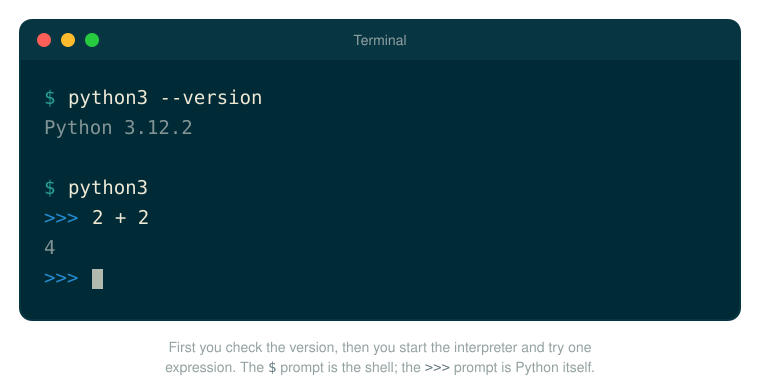
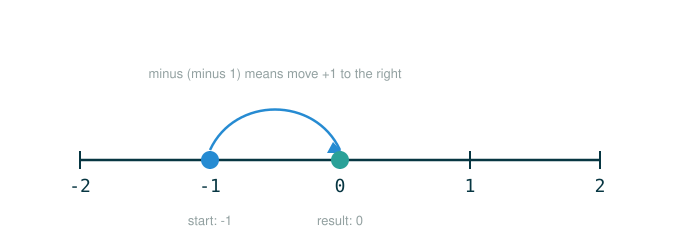
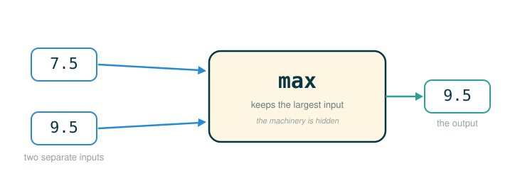

1.1 Getting Started: The Shape of Python Programs
This is day one. By the end of it you will be able to do five things: explain what a program actually is, describe how Python runs the code you type, tell an expression apart from a statement, read a small piece of Python by breaking it into tokens (its smallest meaningful pieces), and read an error message without panic.
None of this requires you to have programmed before. It does require a habit that we will build starting now: when code looks confusing, you slow down and separate it into the smallest meaningful pieces.
Programs Are Careful Instructions
A computer is powerful, but it is not a mind reader. It is closer to a very fast, very literal kitchen assistant. If you say "make dinner," that instruction is too vague. If you say "put two cups of rice into the pot, add four cups of water, turn on the heat, wait until the water is absorbed," the assistant has a sequence it can follow.
A program is that kind of carefully written sequence of instructions. In this course we use Python because Python lets us write instructions in a language that is readable by humans while still being precise enough for a machine.
Why We Learn With Python
Every programming language is a trade-off between what is easy for a person to read and what is easy for a machine to run. Python's designers leaned hard toward human readability, which is exactly why it is a good first language: you can often guess what a short Python program means just by reading it slowly.
That readability is not only a beginner convenience. Python is used to build real software — websites, scientific tools, data analysis, and the systems behind products you use every day. So the language you are learning to read on day one is the same language professionals write on day one thousand. You are not learning a toy version of programming.
There is a useful way to think about what is ahead. The writer Arika Okrent observed that "a language isn't something you learn so much as something you join." Learning Python is less about memorizing rules and more about joining a community of people who already write it, read their code, borrow their tools, and ask them questions. Keep that framing — it will matter again when we talk about errors.
Getting Python Running
Python is itself a program. To run Python code on your own computer, you first install that program — and the steps differ just enough between operating systems that each one gets its own walkthrough, where we can go slowly and answer the snags beginners actually hit. Pick yours, follow it to the end, then come back here:
- Installing Python on macOS — open the step-by-step guide
- Installing Python on Windows — open the step-by-step guide
- Installing Python on Linux — open the step-by-step guide
These guides are where to turn if something goes wrong. Setup is the one part of programming where a small snag can swallow an afternoon, so they spend most of their length on troubleshooting.
Once you have worked through your guide, a single check confirms you are ready. Open a terminal and ask Python for its version number. (The $ below is the terminal's own prompt — it is already there; you type only what comes after it.)
$ python3 --version
Python 3.12.2Any answer that starts with 3 means you are set; your exact numbers may differ from 3.12.2, and that is fine.

Two ways to run your code
Once Python is installed, there are two ways to run code, and you will use both throughout this course:
- Interactively, one line at a time, by starting the interpreter and typing code at its prompt. You start it by typing
python3with no file name and pressing Enter; the prompt then changes from$to>>>, which means Python itself is now listening. This is ideal for trying things out, and it is how the rest of this lesson works. - From a file, by saving your code in a file ending in
.pyand running the whole file at once:
$ python3 my_program.pyReach for a file when you have a finished program you want to run again and again; reach for the interactive prompt when you are exploring. For the rest of this lesson, picture yourself at that interactive >>> prompt.
Talking to Python: The Read-Eval-Print Loop
When you start Python interactively, it shows a prompt made of three characters:
>>>The >>> prompt means Python is waiting for you to type something. When you type a line and press Enter, Python repeats a simple four-step cycle:
read Python reads the line you typed.
eval Python evaluates it, working out what it means.
print Python prints a value, performs an action, or reports an error.
loop Python returns to the prompt and waits for the next line.Because it repeats, this cycle has a name you will hear often: the read-eval-print loop, sometimes shortened to REPL. Every interactive session in this course is a conversation with that loop.
Here is the smallest possible conversation. You type 2 + 2, and Python answers:
>>> 2 + 2
4The line beginning with >>> is what you typed. The line below it, with no prompt, is Python's answer.
Two small bits of housekeeping for later. If something ever keeps running and you want to stop it, press Ctrl-C, which halts the current line and returns you to the prompt. When you are finished entirely, you end the session by pressing Ctrl-D (or by typing quit() and pressing Enter).
Two Kinds of Code: Expressions and Statements
Here is the single most useful idea for reading Python. Broadly, a program is a list of instructions, and every instruction does one of exactly two jobs: it either computes a value or carries out an action. Those two jobs have names.
- An expression is a piece of code that computes a value. When Python evaluates an expression, it works out the value, and in an interactive session it prints that value back to you.
2 + 2is an expression; its value is4. - A statement is a piece of code that carries out an action. When Python executes a statement, it does something — it gives a name to a value, brings in a tool, repeats a block of code — but a statement does not, by itself, produce a value for Python to print.
This table is worth keeping nearby for the whole chapter:
| Expression | Statement | |
|---|---|---|
| Its job | Compute a value | Carry out an action |
| Python's response | Prints the value (in the REPL) | Performs the action, prints nothing |
| Early examples | 2 + 2, max(7.5, 9.5), 1 / 2 |
x = 4, from urllib.request import urlopen |
You will spend the next several lessons going deep on expressions, because they are where computation happens. Statements come back as the main character in lesson 1.5, "Control," where you will use them to make decisions and repeat work. For now, the goal is simply to never again confuse "code that produces a value" with "code that performs an action."
Expressions: Code That Computes a Value
The simplest expressions look like ordinary arithmetic:
# (1)
2 + 2
Python does not "see" (1) the way you see a handwritten math problem. It sees tokens — small, meaningful pieces of code — and reads them left to right:
2 + 2
├─ 2 ........... the integer value two
├─ + ........... the addition operator
├─ 2 ........... the integer value two
└─ evaluates to 4The token 2 means the integer value two. The token + means "combine the value on the left with the value on the right using addition." Python combines them to produce the value:
So in an interactive session the interpreter displays:
4Reading Tricky Expressions
Python is literal about punctuation, and that is easiest to feel on an example that looks stranger than it is:
# (2)
-1 - -1
At first (2) looks confusing because there are minus signs near each other. They do not all mean the same thing. Split it into tokens:
-1 - -1
├─ -1 .......... the number negative one
├─ - ........... the subtraction operator
├─ -1 .......... the number negative one
└─ evaluates to 0So Python evaluates "negative one, minus negative one." Subtracting a negative number moves upward on the number line:
On a number line, subtracting a negative flips direction: instead of moving left, you step to the right.

The interpreter displays:
0This is the habit from the first page, made concrete: when code looks confusing, separate it into the smallest meaningful pieces, then evaluate one piece at a time.
Division works the same way, and it introduces a new kind of number:
# (3)
1 / 2
The / symbol means divide, just as in arithmetic. Python calls this true division, and its defining feature is that it always hands back a decimal number. The value is:
So Python displays:
0.5The number 0.5 is a floating-point number, usually called a float. A float is Python's way of representing numbers with a decimal point. Later we will study why floats are only approximations and why that occasionally matters; for now, it is enough to know that division can produce one.
Calling a Function
Not every expression is written like arithmetic. Python also has functions, which are named, reusable operations. One built-in function is max, which returns the largest of the values you give it:
# (4)
max(7.5, 9.5)
Look at the structure of (4) one token at a time:
max(7.5, 9.5)
├─ max ......... the function: returns the largest input
├─ ( ........... begins the inputs
├─ 7.5 ......... first input
├─ , ........... separates the inputs
├─ 9.5 ......... second input
├─ ) ........... ends the inputs
└─ evaluates to 9.5Here is the same call as a picture: a machine named max that takes two separate inputs and hands back one value.

The inputs to a function are called arguments. Slow this down as if Python were a clerk following a form. The name max is not a magic word for "do something with these numbers." It is the name of a built-in function whose one job is to inspect its arguments and hand back the greatest one. Python first finds the function named max, then gives that function two separate values, 7.5 and 9.5.
The comma matters because it keeps the two values separate. Python is not asked to compute 7.5 + 9.5, and it is not asked to average them. It is asked:
Among these separate arguments, which one is largest?Since 9.5 is greater than 7.5, the call returns 9.5. A beginner-safe way to read the line out loud is:
Call the function named max.
Give it 7.5 and 9.5 as two separate inputs.
Let max compare those inputs.
Use the larger input as the value of the whole expression.The Shape of a Call Expression
Every function call has the same consistent shape:
function_name(argument_1, argument_2)In that template, function_name, argument_1, and argument_2 are placeholders. They are not real Python names you type literally; they stand for the real pieces you substitute in, such as max, 7.5, and 9.5. The parentheses physically tell Python "call this function now." Without parentheses, a function name usually refers to the function itself; with parentheses, Python performs the call.
This is why the parentheses are not optional decoration. Compare a valid call with an invalid one:
max(7.5, 9.5) a valid call expression
max 7.5, 9.5 not valid PythonA human might understand "max 7.5 and 9.5" from context, but Python has no flexible common sense. When the shape is wrong, Python stops and reports a syntax error, which means the code does not follow the grammar rules of the language. The grammar Python needs is exactly:
function_name(argument, argument)When you see any function call, the safe first question is always: what function is being called, and what exact values are being handed to it?
Statements: Code That Carries Out an Action
So far every example has been an expression — code that produces a value. Now look at the other half of the table. The most common statement you will write is an assignment statement, which gives a name to a value:
# (5)
x = 2 + 2
Read (5) carefully, because the difference from an expression is the whole point. The bare expression 2 + 2 computes 4 and the REPL prints it. The statement x = 2 + 2 also computes 4 on the right-hand side, but then it carries out an action: it binds the name x to that value. It prints nothing. After this line, x is 4, and you can use x in later expressions.
2 + 2 an expression: prints 4
x = 2 + 2 a statement: binds x to 4, prints nothingA second kind of statement brings in tools that are not built in. An import statement loads a function or value from elsewhere so you can use it by name:
from urllib.request import urlopenAfter that line runs, the name urlopen refers to a function you can call, even though you did not define it yourself. Importing is exactly the "borrow other people's tools" idea from joining a language — and it sets up our first real program.
A First Real Program: Searching Shakespeare
The examples so far are tiny on purpose. But the reason programming is powerful is that the very same rules let a program work through a huge amount of real data far faster than a person could by hand.
Imagine being asked to search all of Shakespeare for words with a special property: six-letter words whose reversal is also a real word, like redder reversed. By hand that would be slow and error-prone. Here is the entire program, as an interactive session, exactly as it appears in the original text:
>>> from urllib.request import urlopen
>>> shakespeare = urlopen('http://composingprograms.com/shakespeare.txt')
>>> words = set(shakespeare.read().decode().split())
>>> {w for w in words if len(w) == 6 and w[::-1] in words}
{'redder', 'drawer', 'reward', 'diaper', 'repaid'}If that looks like a lot at once — urlopen, set, {w for w in words ...}, w[::-1] — that is exactly what it should look like on day one. You are not meant to understand every symbol here, and you are definitely not meant to write code like this yet. Think of this program as a preview: a single photograph of where you are headed. Every idea in it gets its own slow, from-scratch lesson later. To be concrete about the roadmap:
- Calling and writing functions like
setandurlopen— the rest of Chapter 1 (you start in earnest in 1.3, "Defining New Functions"). - Objects like this set, and how to build your own — Chapter 2.
- The interpreter reading and running it all — Chapter 3, where you build a small one yourself.
So nothing here is a prerequisite for the next lesson; it is a destination. With that pressure off, read the middle line not symbol by symbol but as a pipeline of plain-English actions:
words = set(shakespeare.read().decode().split())
├─ shakespeare.read() .... read the text of Shakespeare's works
├─ .decode() ............. decode the raw bytes into readable characters
├─ .split() .............. split the characters into separate words
├─ set(...) .............. collect the words so each distinct word appears once
└─ words = ............... bind that set to the name wordsThe last line then asks for every word w that is six letters long and whose reverse w[::-1] is also in the set. (Do not worry about the exact punctuation here: == 6 is just how Python asks "is this equal to six?", and w[::-1] is its shorthand for "this word, reversed." Each gets its own proper lesson later.) The result is five words.
Those three previewed ideas — functions, objects, and interpreters — are the load-bearing concepts of the whole course, and each one is already visible right here in this short program.
Functions
urlopen, set, len, and decode are all functions — named operations that take inputs and produce outputs. The whole program is built by handing the output of one function to the next. Nearly everything you do from here on is composing functions like these, which is why call expressions earned such careful reading above.
Objects
Look at the name words. The data it holds is not a number and not a piece of text — it is a set, which is one of several kinds of data Python works with. A kind of data is called a type, and you have already met one: back in "Reading Tricky Expressions," the value 0.5 had the type float. So words is simply data of a different type, a set.
Here is the deeper idea, and it is one the rest of the course is built on. In Python a piece of data does not just sit there — it also carries the operations that make sense for it. Data bundled together with its own operations is called an object, and every type of data is a type of object. A set, then, is one kind of object, and it arrives already knowing how to answer questions like "how many items do I have?" (len) and "do I contain this item?" (the in test). You did not have to teach it those abilities; they come with being a set. Chapter 2 is where you learn to build your own kinds of objects like this one.
Interpreters
Finally, the >>> session is you talking to an interpreter — a program whose job is to read another program and carry out its meaning. Right now Python is that interpreter for you. Remarkably, by Chapter 3 you will understand interpreters well enough to write a small one yourself.
Errors Are Information
Beginning programmers often read an error message as "I failed." In this course, read it instead as "Python reached a point where it could not continue, and it is telling me where the meaning broke." That reframing is not a pep talk; it is how experienced programmers actually work.
There are two early categories of error:
- A syntax error happens when the code does not match Python's grammar, like the missing parentheses in
max 7.5, 9.5. Python catches these before it even tries to run the line. - A runtime error happens when the code has valid grammar but something goes wrong while Python is running it.
Here is a runtime error you can predict:
# (6)
1 / 0
The grammar of (6) is perfectly valid. Python knows what 1, /, and 0 mean. The problem is mathematical: division by zero has no defined value, so Python cannot produce a normal result. It stops and reports the problem like this:
Traceback (most recent call last):
File "<stdin>", line 1, in <module>
ZeroDivisionError: division by zeroRead the last line first. It names the kind of problem Python hit: a ZeroDivisionError. The word Traceback means Python is also showing the path of steps that led to the error — the middle line, with <stdin> and <module>, is just Python noting where it was, which you can ignore for now. Early on, your job is not to understand every line of a traceback, but to find that final error name and ask, "what operation was Python trying to perform when it gave up?"
Computers Are Powerful and Stupid
It helps to hold an honest mental model of the machine. A useful one, from Stanford's introductory course, is a small equation:
Powerful, because a computer performs billions of operations correctly, faster than you can imagine. Stupid, because it does exactly and only what you tell it, with zero common sense. It will never guess what you meant. When your code is wrong, the computer does not "almost" do the right thing — it does precisely the wrong thing you actually wrote.
This is why every programmer, at every level, spends real time debugging: finding and fixing the gap between what they meant and what they wrote. Errors are not a sign that you are bad at this. They are the normal weather of programming, and getting good means getting good at debugging. Four habits do most of the work:
| Habit | What it means in practice |
|---|---|
| Test incrementally | Run small pieces as you build them, instead of writing many lines and running them all at once. |
| Isolate errors | Narrow the problem down to the smallest piece of code that still shows it. |
| Check your assumptions | Verify what you believe is true — print a value, check a result — rather than trusting your memory of it. |
| Consult others | Read the documentation, search for the error message, and ask people. You joined a language; use the community. |
That last habit connects back to where we started. You are not learning Python alone in a sealed room. When you are stuck, looking things up and asking for help is not cheating — it is exactly how the people who already write Python got good at it.
▶Step-Through Checkpoint
The next code block uses statements to store values, then ends with an expression, which lets us sketch a simple picture of what Python is keeping track of — a picture called an environment diagram. Here it is just one global frame: a table of names and the values they point to. Before you step through the block below, write down three predictions: the order in which names will appear in that frame, the value larger points to once the third line runs, and what, if anything, the last line adds to the frame.
# (7)
first = 7.5
second = 9.5
larger = max(first, second)
larger
Step through it one line at a time and check each prediction as the frame fills in. The first three lines are assignments, so first, second, and larger should have appeared one at a time, with larger bound to 9.5; the last line is an expression, and it adds no name at all. The important idea, which we will use throughout Chapter 1, is that a name like larger is not the value itself. It is a label that points to a value. The assignment larger = max(first, second) first evaluates the expression on the right to 9.5, then binds the name on the left to that result.
⚠Common Beginner Traps
When a student gets stuck in the first few days of Python, the cause is usually one of these:
- Reading code as English sentences instead of as small Python tokens.
- Forgetting that
()is what turns a function name into an actual function call. Without the parentheses, nothing runs; the name just refers to the function itself instead of calling it. - Forgetting that commas separate the arguments inside a call. Omit one and Python reports a
SyntaxErrorinstead of running the call. - Expecting an assignment like
x = 2 + 2to print4. It does not — a statement carries out an action and prints nothing; only an expression prints a value. - Treating an error as a dead end instead of as a diagnostic message that names the problem.
- Assuming Python "knows what I meant." It only ever follows the code you actually wrote.
✓Check Your Understanding
- You type these two lines into the interpreter, one after the other. What, if anything, does Python print after each?
>>> y = 10 / 4
>>> y- What is the difference between an expression and a statement? Give one example of each.
- In
max(7.5, 9.5), what do the parentheses tell Python, and what do the commas do? - Why is
max 7.5, 9.5a syntax error rather than a runtime error? - The line
1 / 0has valid grammar. Why does Python still stop, and what is that kind of error called? - The "powerful + stupid" model says the computer has no common sense. Which of the four debugging habits most directly helps when your code runs but gives the wrong answer?
Show the answers
- The first line is an assignment statement, so it carries out an action (binding
y) and prints nothing. The second line is an expression — just the namey— so the REPL prints its value,2.5(a float, because/is true division). - An expression computes a value (and the REPL prints it); a statement carries out an action and prints nothing. Example expression:
2 + 2. Example statement:x = 4. - The parentheses tell Python to call the function
maxnow; the commas separate7.5and9.5into two distinct arguments. - Because the code breaks Python's grammar rules for a call expression, so Python rejects it before running it. A runtime error, by contrast, has valid grammar but fails while running.
- Division by zero has no defined value, so the operation cannot produce a result; Python raises a runtime error called
ZeroDivisionError. - Checking your assumptions — verifying what a value actually is rather than what you assume it is — is the most direct tool for a wrong-answer bug. (Isolating the error is a strong second.)
§Summary
A Python program is precise text that an interpreter reads and evaluates inside the read-eval-print loop. Every piece of code does one of two jobs: an expression computes a value, and a statement carries out an action. Reading code well means breaking it into tokens, identifying its structure, and predicting the value or action Python will produce — whether that code is 2 + 2, a max(...) call, an assignment, or an import. The Shakespeare search shows the destination: functions, objects, and an interpreter combine so that small, precise rules can answer a real question about a large body of data. And because the machine is powerful but has no common sense, errors are normal information, and debugging — testing incrementally, isolating problems, checking assumptions, and consulting others — is a core skill, not a sign of failure.